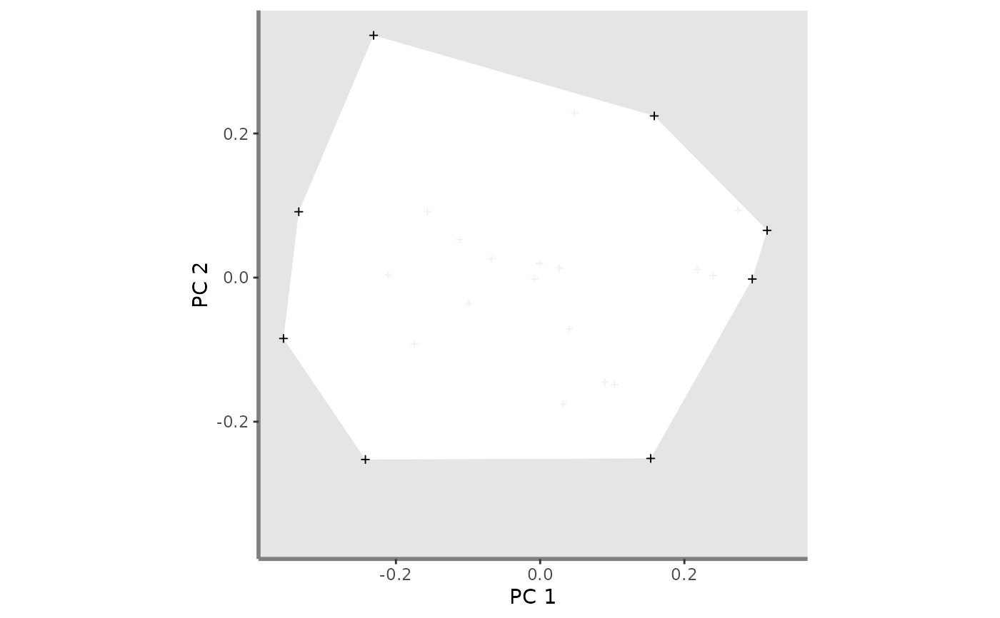

Plot all species from the study case and associated convex hull
Usage
pool.plot(
ggplot_bg,
sp_coord2D,
vertices_nD,
plot_pool = TRUE,
shape_pool = 3,
size_pool = 0.8,
color_pool = "grey95",
fill_pool = NA,
color_ch = NA,
fill_ch = "white",
alpha_ch = 1,
shape_vert = 3,
size_vert = 1,
color_vert = "black",
fill_vert = NA
)Arguments
- ggplot_bg
a ggplot object of the plot background retrieved through the
background.plotfunction.- sp_coord2D
a list of matrix (ncol = 2) with coordinates of species present in the pool for a given pair of axes
- vertices_nD
a list (with names as in sp_coord2D) of vectors with names of species being vertices in n dimensions.
- plot_pool
a logical value indicating whether species of each assemblage should be plotted or not. Default: plot_pool = TRUE.
- shape_pool
a numeric value referring to the shape used to plot species pool. Default:
shape_pool = 16(filled circle).- size_pool
a numeric value referring to the size of species belonging to the global pool. Default:
size_pool = 1.- color_pool
a R color name or an hexadecimal code referring to the color of the pool. This color is also used for FRic convex hull color. Default:
color_pool = "#0072B2".- fill_pool
a R color name or an hexadecimal code referring to the colour to fill species symbol (if
shape_sp> 20) and the assemblage convex hull. Default:fill_pool = '#0072B2'.- color_ch
a R color name or an hexadecimal code referring to the border of the convex hull filled by the pool of species. Default:
color_ch = "black".- fill_ch
a R color name or an hexadecimal code referring to the filling of the convex hull filled by the pool of species. Default is:
fill_ch = "white".- alpha_ch
a numeric value for transparency of the filling of the convex hull (0 = high transparency, 1 = no transparency). Default:
alpha_ch = 0.3.- shape_vert
a numeric value referring to the shape used to plot vertices if vertices should be plotted in a different way than other species. If
shape_vert = NA, no vertices plotted. Default:shape_vert = NA.- size_vert
a numeric value referring to the size of symbol for vertices. Default:
size_vert = 1.- color_vert
a R color name or an hexadecimal code referring to the color of vertices if plotted. If color_vert = NA, vertices are not plotted (for shapes only defined by color, ie shape inferior to 20. Otherwise fill must also be set to NA). Default:
color_vert = NA.- fill_vert
a character value referring to the color for filling symbol for vertices (if
shape_vert>20). Iffill = NAandcolor = NA, vertices are not plotted (ifshape_vertsuperior to 20. Otherwisecolor_vert = NULLis enough). Default isNA.
Value
A ggplot object plotting background of multidimensional graphs and species from the global pool (associated convex hull if asked).
Examples
# Load Species*Traits dataframe:
data("fruits_traits", package = "mFD")
# Load Assemblages*Species dataframe:
data("baskets_fruits_weights", package = "mFD")
# Load Traits categories dataframe:
data("fruits_traits_cat", package = "mFD")
# Compute functional distance
sp_dist_fruits <- mFD::funct.dist(sp_tr = fruits_traits,
tr_cat = fruits_traits_cat,
metric = "gower",
scale_euclid = "scale_center",
ordinal_var = "classic",
weight_type = "equal",
stop_if_NA = TRUE)
#> [1] "Running w.type=equal on groups=c(Size)"
#> [1] "Running w.type=equal on groups=c(Plant)"
#> [1] "Running w.type=equal on groups=c(Climate)"
#> [1] "Running w.type=equal on groups=c(Seed)"
#> [1] "Running w.type=equal on groups=c(Sugar)"
#> [1] "Running w.type=equal on groups=c(Use,Use,Use)"
# Compute functional spaces quality to retrieve species coordinates matrix:
fspaces_quality_fruits <- mFD::quality.fspaces(sp_dist = sp_dist_fruits,
maxdim_pcoa = 10,
deviation_weighting = "absolute",
fdist_scaling = FALSE,
fdendro = "average")
# Retrieve species coordinates matrix:
sp_faxes_coord_fruits_2D <-
fspaces_quality_fruits$details_fspaces$sp_pc_coord[ , c("PC1", "PC2")]
# Set faxes limits:
# set range of axes if c(NA, NA):
range_sp_coord_fruits <- range(sp_faxes_coord_fruits_2D)
range_faxes_lim <- range_sp_coord_fruits +
c(-1, 1)*(range_sp_coord_fruits[2] -
range_sp_coord_fruits[1]) * 0.05
# Retrieve the background plot:
ggplot_bg_fruits <- mFD::background.plot(
range_faxes = range_faxes_lim,
faxes_nm = c("PC 1", "PC 2"),
color_bg = "grey90")
# Retrieve vertices names:
vert_nm_fruits <- vertices(sp_faxes_coord_fruits_2D,
order_2D = TRUE, check_input = TRUE)
# Plot the pool:
plot_pool_fruits <- pool.plot(ggplot_bg = ggplot_bg_fruits,
sp_coord2D = sp_faxes_coord_fruits_2D,
vertices_nD = vert_nm_fruits,
plot_pool = TRUE,
shape_pool = 3,
size_pool = 0.8,
color_pool = "grey95",
fill_pool = NA,
color_ch = NA,
fill_ch = "white",
alpha_ch = 1,
shape_vert = 3,
size_vert = 1,
color_vert = "black",
fill_vert = NA)
plot_pool_fruits
